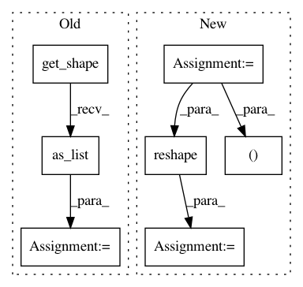

1ea84b7fa9a03781d22837f91683462d823202ea,research/object_detection/predictors/heads/keras_class_head.py,WeightSharedConvolutionalClassHead,_predict,#WeightSharedConvolutionalClassHead#Any#,326
Before Change
for layer in self._class_predictor_layers:
class_predictions_with_background = layer(
class_predictions_with_background)
batch_size = features.get_shape().as_list()[0]
if batch_size is None:
batch_size = tf.shape(features)[0]
class_predictions_with_background = self._score_converter_fn(
class_predictions_with_background)
After Change
for layer in self._class_predictor_layers:
class_predictions_with_background = layer(
class_predictions_with_background)
batch_size, height, width = shape_utils.combined_static_and_dynamic_shape(
features)[0:3]
class_predictions_with_background = tf.reshape(
class_predictions_with_background, [
batch_size, height, width, self._num_predictions_per_location,
self._num_class_slots
])
class_predictions_with_background = self._score_converter_fn(
class_predictions_with_background)
if self._return_flat_predictions:
class_predictions_with_background = tf.reshape(
In pattern: SUPERPATTERN
Frequency: 4
Non-data size: 7
Instances
Project Name: tensorflow/models
Commit Name: 1ea84b7fa9a03781d22837f91683462d823202ea
Time: 2020-11-24
Author: gardener@tensorflow.org
File Name: research/object_detection/predictors/heads/keras_class_head.py
Class Name: WeightSharedConvolutionalClassHead
Method Name: _predict
Project Name: IndicoDataSolutions/finetune
Commit Name: 7fd53c15c6273327ef10c2458848fcaf2a85e406
Time: 2019-03-21
Author: benlt@hotmail.co.uk
File Name: finetune/base_models/gpt/featurizer.py
Class Name:
Method Name: gpt_featurizer
Project Name: tensorflow/models
Commit Name: 1ea84b7fa9a03781d22837f91683462d823202ea
Time: 2020-11-24
Author: gardener@tensorflow.org
File Name: research/object_detection/predictors/heads/class_head.py
Class Name: WeightSharedConvolutionalClassHead
Method Name: predict
Project Name: IndicoDataSolutions/finetune
Commit Name: 7fd53c15c6273327ef10c2458848fcaf2a85e406
Time: 2019-03-21
Author: benlt@hotmail.co.uk
File Name: finetune/base_models/gpt2/featurizer.py
Class Name:
Method Name: gpt2_featurizer